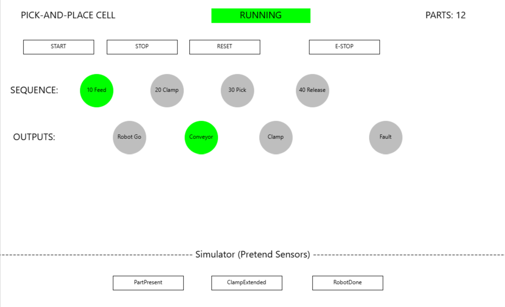
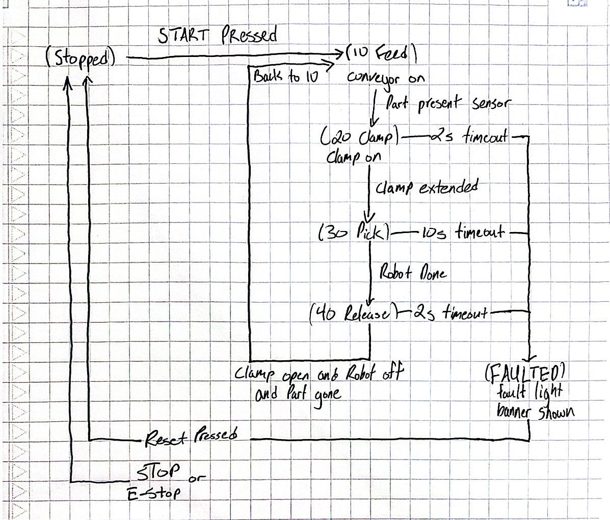
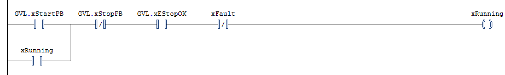
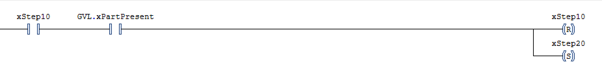
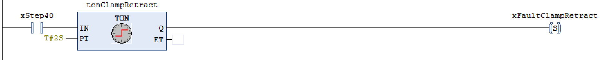

Simulated Pick-and-Place Cell
A PLC & HMI project: a simulated conveyor, pneumatic clamp and robot, sequenced by a ladder-logic state machine with fault timeouts, an E-stop and an operator HMI.

Overview
I built a simulated automated work cell in CODESYS. This work cell performs four simple steps: a conveyor feeds a part, a pneumatic clamp holds it, a robot picks it, and the PLC counts each good part. My program contains a few features typical of an automation system, including an operator HMI screen, fault timeouts, and an E-stop. I taught myself CODESYS and ladder logic for this project over about two weeks, starting with little PLC experience.
How It Works
The sequence is a state machine with one bit per step, which means only one step is active at a time. Each step waits for real feedback (a sensor or robot signal) before moving on, and each has a timeout that faults the machine if the step isn't completed in the expected time frame.
| Step | What the machine does | Outputs on | Moves when | Timeout fault |
|---|---|---|---|---|
| 10 Feed | Conveyor brings part to stop | Conveyor | Sensor sees part | none |
| 20 Clamp | Clamp cylinder closes on part | Clamp | Clamp sensor confirms closed | 2 s |
| 30 Pick | Robot arm picks up part | Clamp, Robot Go | Robot reports done | 10 s |
| 40 Release | Clamp opens, robot moves part | none | Clamp open AND Robot off AND Part gone | 2 s |
Design Decisions
-
Seal-in run circuit
I put a start contact in parallel with a run bit contact so the machine keeps running after the start button is released, until stop, a fault, or E-stop breaks the circuit.
-
Moore machine
Every transition rung sets the next step and resets the current one. This keeps the machine in only one step at a time and makes debugging easier. All outputs depend only on the current step.
-
Full robot handshake
The PLC turns on Go, the robot turns on Done, the PLC drops Go, and the robot drops Done. The PLC waits for the whole exchange so the two can't get out of sync.
-
Latched faults with a timeout per step
Each step has its own TON timer. A timeout latches a specific fault bit, stops the machine through the run circuit, and shows a message telling the operator what to check. Reset is required to clear it.
What I Learned
-
A state machine makes sequencing and debugging easier
With one bit per step and only one step active at a time, I could always see where the machine was. When it stopped, I checked which step was on and which input it was waiting for.
-
Every step needs feedback plus a timeout
A step should only move on when a sensor or the robot confirms the action happened, not because time has passed. If that confirmation never comes, a timeout has to catch it, or the machine just waits with no explanation.
-
An HMI is for the operator, not for me
While programming, I was watching internal bits. An operator needs to see what state the machine is in and what to check when it stops, which is why each fault shows its own plain message, like “Clamp did not close – check air pressure and sensor.”
-
Picking up a new IDE and language fast
I started with little PLC experience and taught myself CODESYS and ladder logic in about two weeks, going from the basics to a working sequence with an HMI, fault handling and an E-stop.
Media




